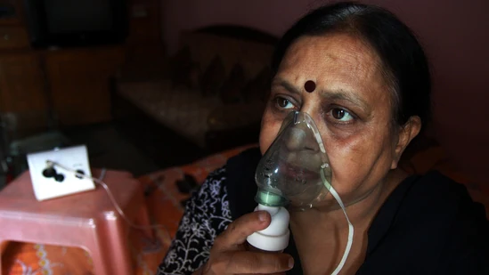

By deploying four additional combined armed brigades across India's eastern sector, China under President Xi seems to be telling Modi's India to take a step back from QUAD and the Indo-Pacific
According to Madhya Pradesh excise officials familiar with liquor sales in the state, the phenomenon is spread across Jhabua and Alirajpur districts near the Gujarat border
Shah Rukh Khan and Malaika Arora danced on a moving train in the Dil Se song Chaiyya Chaiyya. It was choreographed by Farah Khan and remains one of the most popular songs of Malaika's career
Bhediya movie review: The Amar Kaushik directorial is an immersive experience with intense but funny dialogues and clever writing. Bhediya stars Varun Dhawan, Kriti Sanon, Abhishek Bannerjee and Deepak Dobriyal, among others.
Sussanne Khan has designed Anushka Sharma and Virat Kohli's Alibaug home and it's filled with greenery, and lots of white.
A Twitter user replied to a poll by Elon Musk with a Mars-related meme that received a response from the tech billionaire

The video of a man effortlessly parking a truck while controlling the steering wheel from outside was posted on Twitter.
The video of a snake slithering away with a slipper was posted on Twitter.
Uncertainty and scattered, unconfirmed reports of lockdowns in at least some Beijing districts have fueled demand for food and other supplies, something not seen in the city for months.
On Friday, pace sensation Umran Malik made his much-anticipated ODI debut as India took on New Zealand in the first match of the three-match series in Auckland and returned figures of 2/66, with Zaheer Khan and Ajit Agarkar giving their verdict on the 23-year-old quick.
A new study in the Journal of the American Heart Association suggests people with persistent asthma suffer from higher levels of inflammation and artery plaque, which can in turn increase their chances of a heart attack or stroke. Here's how they can take care of their heart.
In seven games for Brazil this year, Richarlison has scored nine goals and he looks good for plenty more
Ganga Kacchar water resource department Rewa chief engineer CM Tripathi, who signed the order, said the work was not completed by the contractor even after a lapse of more than nine years
An MRF is a centre where glass, plastic, metal, paper, cardboard and rubber waste are segregated and handed over to MCG-empaneled scrap dealers for recycling
Researchers found that the likelihood of having a severe asthma episode was almost quadrupled among asthma patients. The study discovered a rise in the probability of these attacks following the relaxation of Covid-19 limits.
